| 日付 | 2021年2月10日（水） - 2021年2月13日（土） |
|---|---|
| メンバー | 家族（妻、長女・9歳、長男・7歳） |
| アクセス | 車 |
4日目
本日は旅行最終日。特に急ぐ理由もないので、朝はゆっくりお散歩。
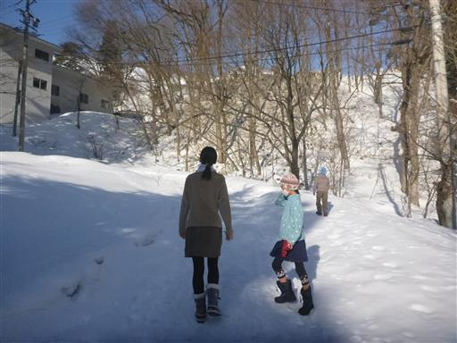
スキー場まで散歩してみる。雪の上に動物が歩いた足跡が付いている。
なんでわざわざここを歩いたのだろう？
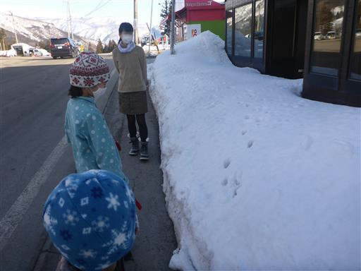
その後は宿の前で雪玉作り。
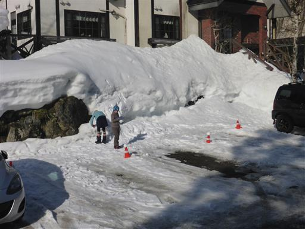
雪だるまが完成する。3泊お世話になった宿を後にする。
毎日宿泊者がたくさんいたのは驚きだったが、
ストレスなく快適に過ごすことができた宿だった。
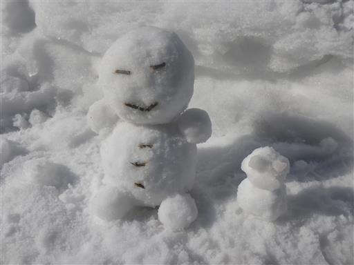
本日も天気が良いため、アルプス展望広場に行ってみる。
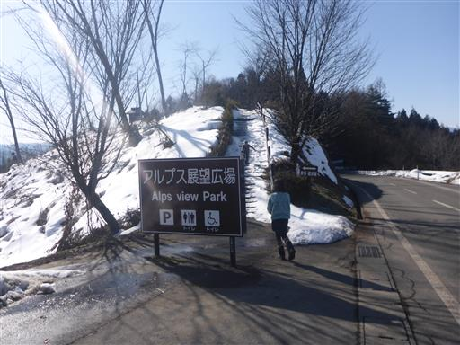
スキー場からは間近から北アルプスを眺められたが、
ここからは壁のように連なる北アルプスの山々を見渡すことができる。
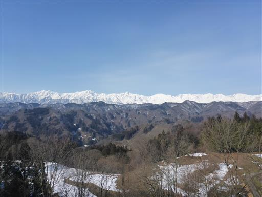
左から爺ヶ岳。
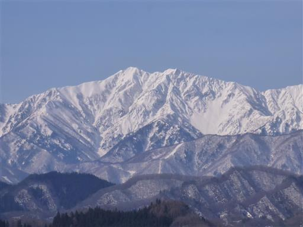
鹿島槍ヶ岳。美しい双耳峰の山だ。
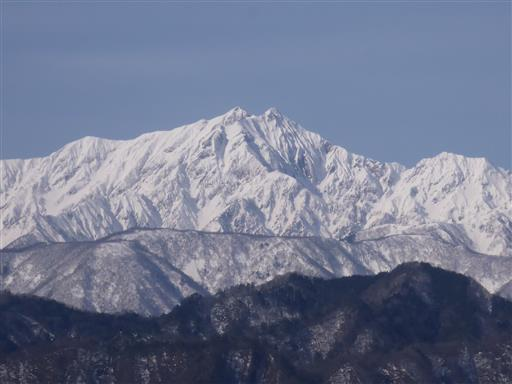
五竜岳。山頂右下に武田家の家紋そっくりの武田菱が良く見えている。
右下の白いエリアが白馬五竜スキー場だ。
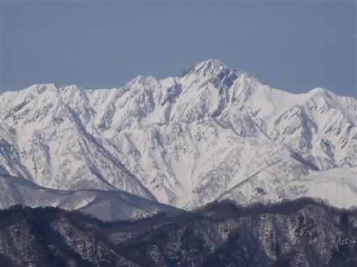
唐松岳。右下に見えるのが白馬八方尾根スキー場。
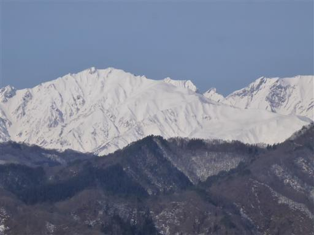
白馬三山。
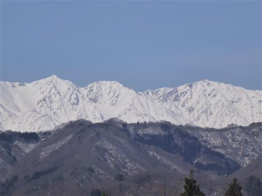
小さなお堂がある。
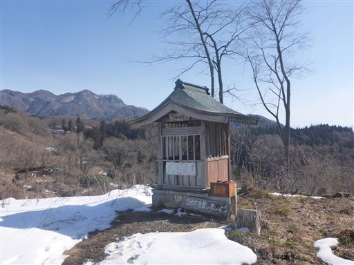
中にあるのは、ずくだせ明王。不思議な形の像だ。
1987年作と書かれてあり、歴史のあるものでは無さそうだ。
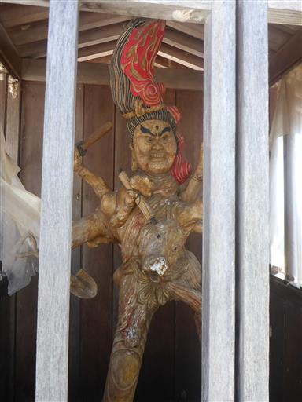
東屋でおやつタイム。
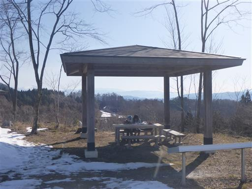
展望広場の真ん中に謎の水道がある。蛇口は堅くて動かなかった。
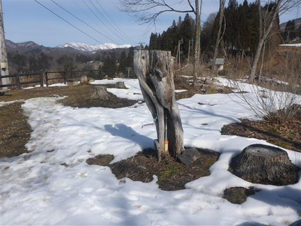
子供達はここでも雪だるま作り。
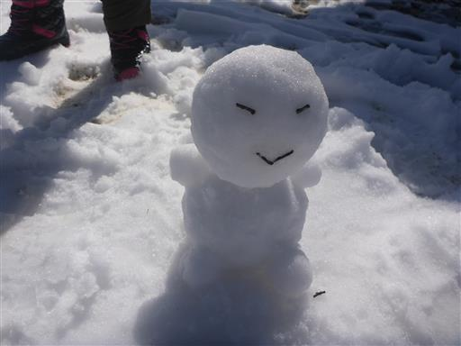
アルプスの素晴らしい展望を眺めたら、次なる観光地に向かう。
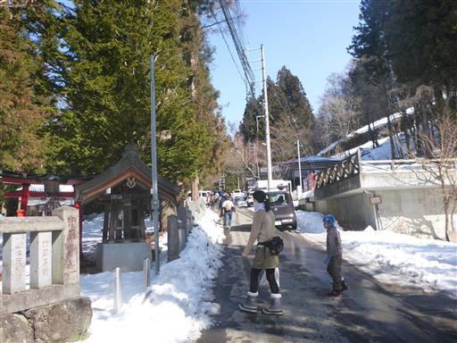
訪れたのは地獄谷野猿公苑。
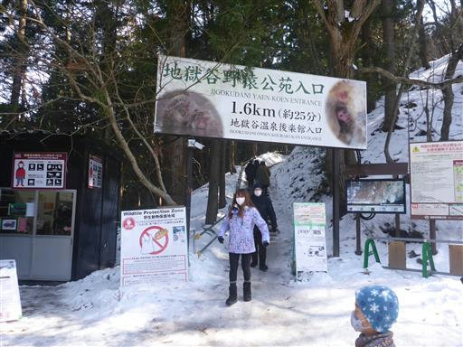
入口手前のベンチで、コンビニで買ったおにぎりなどで昼食をとる。
ここのベンチはスキー板でできている。
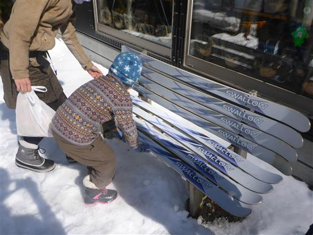
ここから1.6km雪道を歩く。観光客には結構大変そうな道だ。
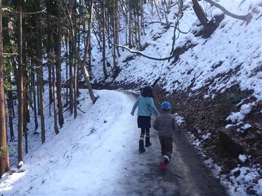
30分ほど歩くと建物が見えてくる。なかなか雰囲気の良い場所だ。
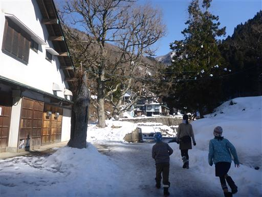
一匹目の猿を発見。座ってじっとしている。
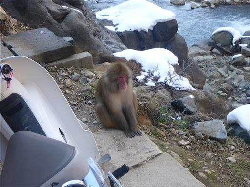
この奥地に一軒宿が建っている。
車では来られず、歩かないとたどり着けない宿のようだ。
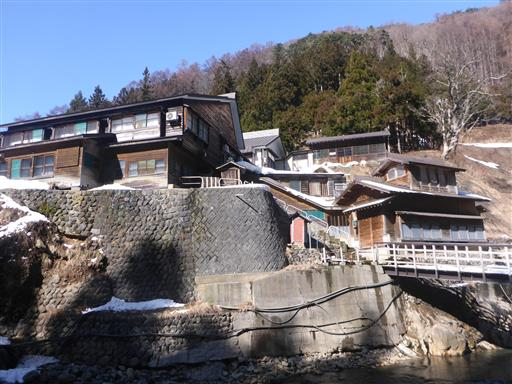
この宿の温泉に猿がやってきている。
ここは人間用の温泉のはずだが、猿に占拠されてしまっている。
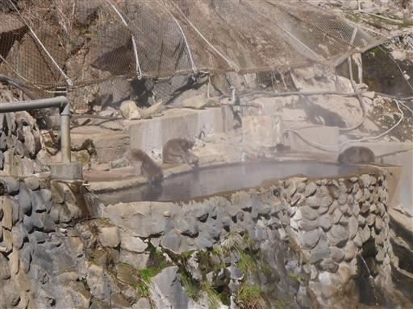
宿の近くにある渋の地獄谷噴泉。国の天然記念物だ。

熱泉が吹きあがっている。
どの程度の温度かは分からないが、周囲は凍り付いている。
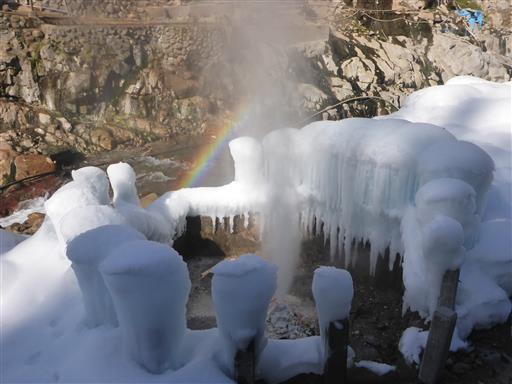
ここから先は有料ゾーン。
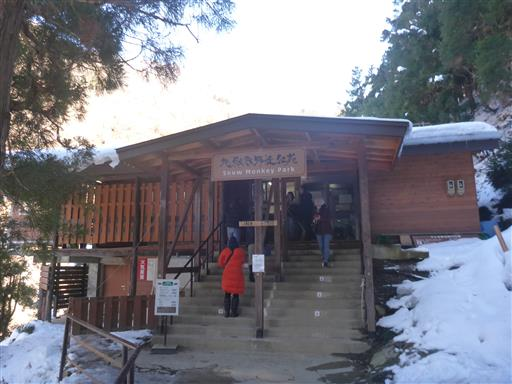
本日のハイライト、猿の温泉に到着する。
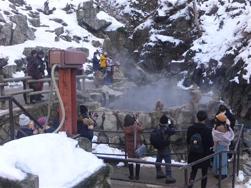
温泉の縁に座る猿たち。
温泉に入る猿という、珍しいものを見られる場所だが、寒い日しか入らないらしい。
本日は暖かいのでなかなか入らなさそうだ。
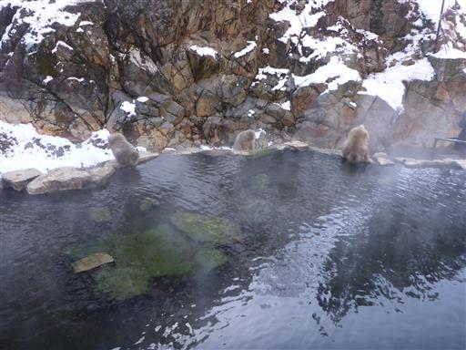
側にいるだけでも結構温かいのだろうか？
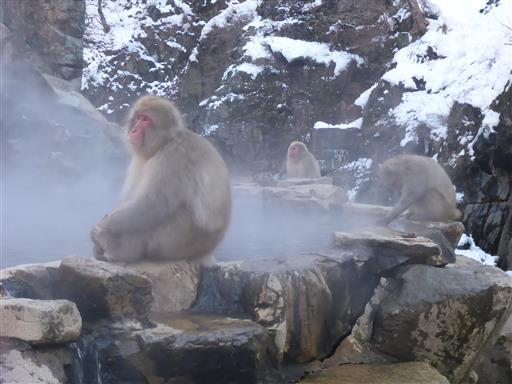
口を付けている猿がいるが、何をやっているのだろう？
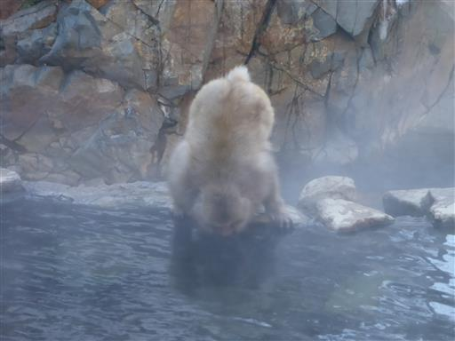
大人だけでなく子猿も多い。
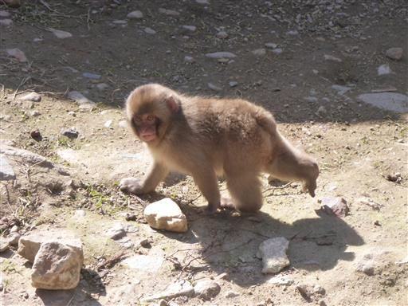
全く人間を恐れない猿たち。人が猿に関わらないよう注意書きがあり、スタッフが見張っている。
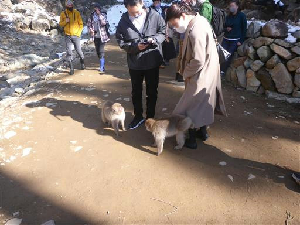
周囲を山に囲まれた小さな谷。
驚くことに観光客の半分以上は外国人だ。欧米人、中国人、など様々な言語が飛び交う。
外国人に人気の観光地であることは知っていたが、このご時世でも外国人が多いというのは意外だった。
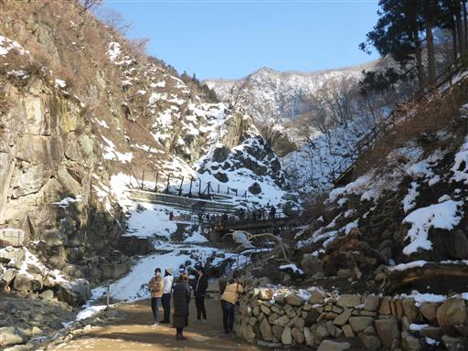
雪の上で遊ぶ猿たち。
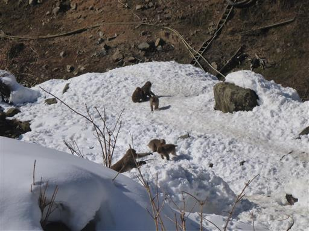
猿同士の毛づくろい。熱心に指で何やらつまんでいる。
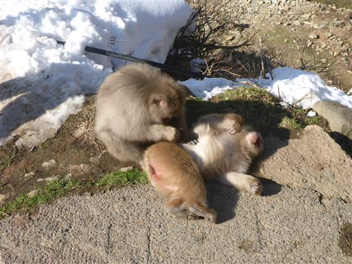
小さな谷間のちょっと珍しい温泉。
お湯につかっている猿は眺められなかったが、可愛い猿たちを近くで見ることができて楽しかった。
これで今回の旅行は終了。ゆっくりしすぎて帰宅が遅くなってしまった。
旅行先はガラガラを期待していたが、どこも思ったより人出が多かった。
それでも例年よりは少ないのだろう。
何といっても、天候の安定しない冬の北信州で
4日とも晴れてくれたのが、嬉しい誤算の旅行だった。
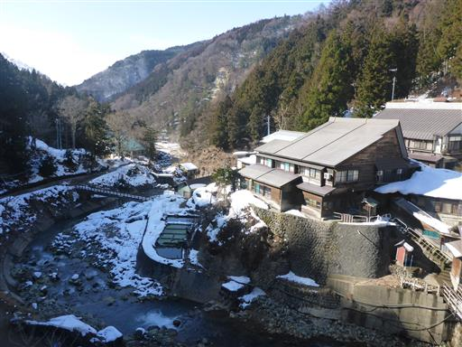